Measurement tab
The Measurement tab is where you set up a sweep of one to four parameters, choose what to measure, run it, and watch
it in the live plot. It runs your setup with QCoDeS’ dond function, and writes the data to the database.

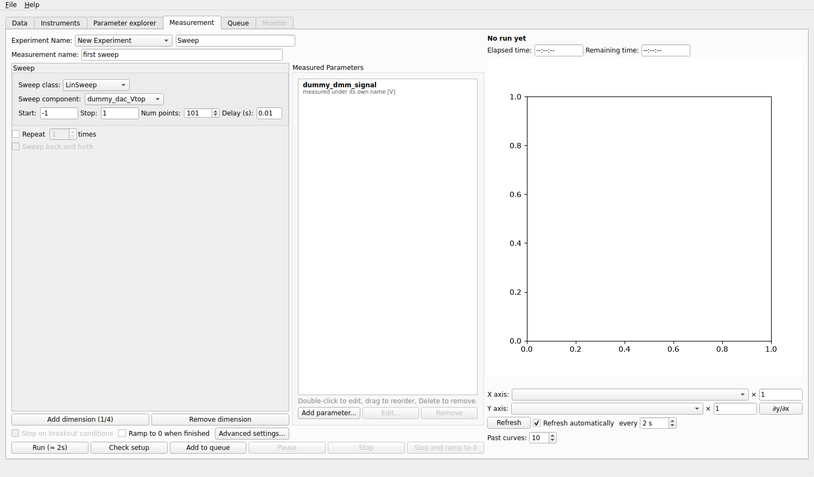
The Measurement tab. On the left, the names, the sweep and the measured parameters; on the right, the live plot.
Names
- Experiment Name
Groups related measurements in the database. Pick an existing experiment of the database folder from the list, or type a new name; if you leave it empty the experiment is called
Sweep.- Measurement name
The name of this measurement. It is required: Run stays disabled until there is one. With several repetitions, the runs get
[1/3],[2/3]… after it.
Sweeps
A sweep box describes one axis. Under Sweep class choose how the values are made:
- LinSweep
Start to Stop in Num points equal steps.
- LogSweep
The same with logarithmic steps; Start and Stop are the real values and must be above 0.
- ArraySweep
The values come from a Python expression, such as
np.linspace(0, 1, 101)ornp.concatenate((np.linspace(0, 1, 51), np.linspace(1, 0, 51))). NumPy is available asnp. The number of points is shown next to the field.- TogetherSweep
Two parameters swept at the same time, with a start and a stop for each and one number of points. They take their n-th value together, which is how you sweep a top gate and a back gate along a line of constant displacement field.
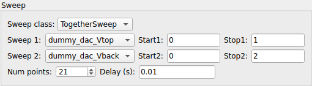
- Sweep component
The experiment parameter to sweep. The selector walks the list of experiment parameters (only those that can be set are offered). If the selected parameter has safe limits, the sweep must stay inside them.
- Delay (s)
The time to wait at each point, after the parameter is set and before the measured parameters are read. It is added to the time the parameter needs to ramp and the instruments need to answer.

More axes
Add dimension (n/4) adds a new outermost (slowest) axis, up to four; Remove dimension removes the outermost one. The last box is the innermost (fastest) axis: it is swept completely for every value of the axes outside it. A two-dimensional map of a gate against another gate is two boxes.

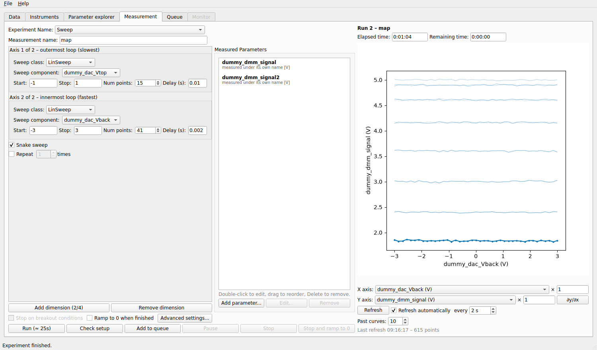
A two-dimensional sweep (a snake sweep, see below) and its live plot: every curve is one sweep of the inner axis.
Repeat, back and forth, snake
- Repeat N times
Runs the whole measurement several times, one after the other. Each repetition is a run of its own in the database.
- Sweep back and forth
With one axis and repetitions: every other repetition sweeps backwards, so the up and the down sweeps are separate runs.
- Snake sweep
With two axes: the inner axis goes back and forth on every other pass of the outer axis, instead of jumping back to its start. It saves the time of the return ramp. The database holds the real values, in the order they were swept.
With no sweep axis at all (Remove dimension down to none) the measured parameters are acquired once: the way to record a trace.
Measured parameters
The Measured Parameters box lists what is recorded at every point. Click Add parameter… and pick an experiment parameter (only parameters that can be read are offered):

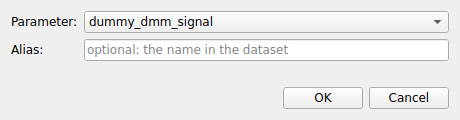
- Alias
Optional: the name the parameter gets in the dataset. Left empty, it keeps its own name. A trace is always saved under its own name, with its axis.
Double-click an entry to edit it, drag to reorder, and press Delete to remove it. Measuring several parameters at each point is free: they are read together (in parallel for different instruments, if Use threads is on).
Before you run
- Run (≈ time)
The button shows an estimate of the duration: the delays, plus the time to ramp the swept parameters at their maximum ramp rate, repetitions included. The time the instruments take to answer is not included.
- Check setup
A dry run: it looks at the measurement without touching an instrument and reports what it finds. It checks every swept value against the safe limits and validators, warns when a sweep reaches an alarm, when a parameter has no ramp rate for its first move, when the disk is nearly full or the grid is huge, and gives the estimated duration:
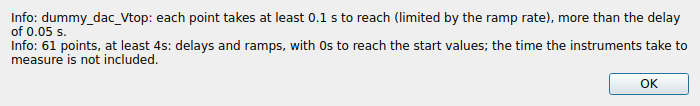
A sweep that leaves the safe limits is refused with the reason, and Run and the queue refuse it too:
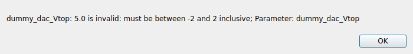
- Stop on breakout conditions
Ends the measurement cleanly as soon as a breakout condition of an experiment parameter is true (defined in the Parameter explorer). With several conditions, Settings, Measurement chooses whether any one or all of them must be true.
- Ramp to 0 when finished
When the measurement ends (by itself, on a breakout condition, or with Stop) every swept parameter is brought to 0 at its maximum ramp rate.
- Add to queue
Adds this setup, as a recipe, to the queue.


Running
Click Run. While the measurement runs, the buttons that would set or disconnect instruments are disabled, but the fields of this tab stay editable: use the time to prepare the next measurement; it does not change the run in progress.
- Pause
Pauses after the current point, and Resume continues. The instruments stay as they are.
- Stop
Ends the measurement cleanly after the current point; what was written stays in the database.
- Stop and ramp to 0
Stops, then brings every swept parameter to 0 at its maximum ramp rate.
A bar under each axis shows its progress. If an instrument stops answering, the measurement waits and retries a few times before it fails (see Safety).
The live plot
The plot follows the run as the data is written: QCoDeS hands it the new points, and the database is not read again and again, so the plot costs the measurement almost nothing. Above it, the run number and name, the Elapsed time and the Remaining time (estimated from the pace of the points).

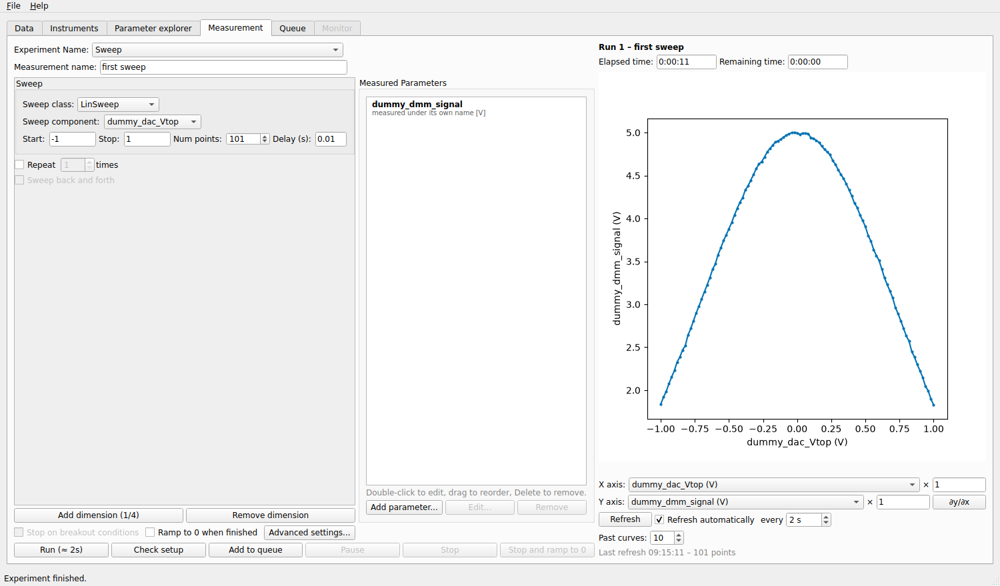
Below the plot:
- X axis, Y axis
Any swept or measured parameter can be plotted against any other. The number to the right is a multiplication factor, to plot in other units (
1e3for mV).- ∂y/∂x
Plots the derivative of y with respect to x, for every curve.
- Refresh and Refresh automatically every N s
The plot is redrawn at that period (1 s to 1 hour); the button redraws at once. Nothing is redrawn while the tab is hidden, or when nothing changed.
- Past curves
How many earlier curves are drawn faded behind the current one. For a one-dimensional run it is the previous runs of the same experiment that measured the same parameters; for a map it is the previous sweeps of the same run.
What is drawn
A one-dimensional run is one curve, with the faded curves of earlier runs behind it.
A map is drawn as the latest sweep of the inner axis (dots) with the previous sweeps faded behind it. Choose another y parameter to look at the other measured values.
A trace (an array read at each point) is one curve per reading, against its own axis, newest on top:
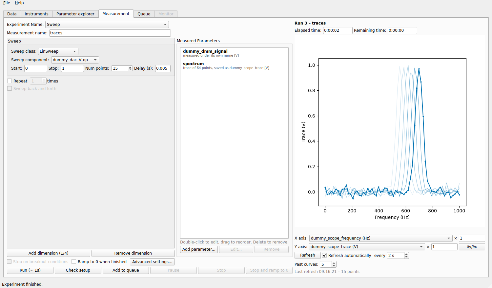
The scalar parameters measured in the same run are plotted as usual, against the swept parameter.
A complex parameter is drawn as its real part (blue) and its imaginary part (orange), with a legend.

Points that are missing are skipped, so a curve is always one continuous line.
Filling in Start and Stop from the plot
After a first sweep, you can set the range of the next one on the plot. Put the text cursor in the Start or Stop field of a sweep (a LinSweep, a LogSweep or a TogetherSweep). The field is armed: a blue note under the plot says so, and two vertical lines show the current Start (orange) and Stop (green).

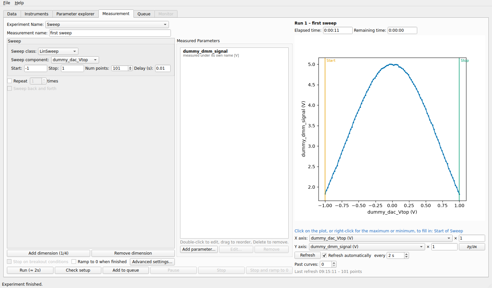
Click the plot: the x value under the cursor goes into the armed field (the factor of the axis is taken out).
Drag sideways: the dragged range becomes both Start and Stop, in the direction of the drag.
Right-click the plot for the menu below.
This only works when the x axis of the plot is the parameter that the armed field sweeps; otherwise a warning says so and nothing changes.

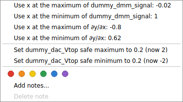
Use x at the maximum / minimum of y, and of ∂y/∂x: fill the armed field with the position of the extremum of the curve (for a gate sweep, the position of a peak or of the steepest slope).
Set parameter safe maximum / minimum to x: sets a safe limit of the parameter on the x axis to the position of the cursor, after asking for confirmation. It is the same limit as in the Parameter explorer.
Once the run has ended: the tag dots and notes of the run, as in the Data tab.
When a measurement writes several datasets (see below), a Dataset selector above the plot chooses which one is drawn.
Advanced settings
Advanced settings… opens a window with the options of dond. The button shows how many of them differ from the
defaults. The settings are part of the setup: they are saved with recipes and snapshots.
Actions
An action is a few lines of Python that run at a given moment of the measurement. The page Actions has two lists:
- Before the measurement starts
Run once, before the first point (the
enter_actionsofdond).- After the measurement ends
Run once, after the last point, also when the measurement was stopped (the
exit_actions).

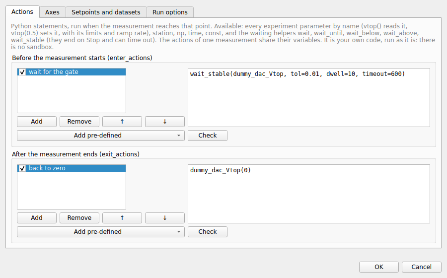
The page Axes has, for each sweep axis, a list of actions that run after each point of that axis is set, before the delay
and before the inner loop (the post_actions), and a box Read the parameter back after setting it, which stores the value
read instead of the value set.

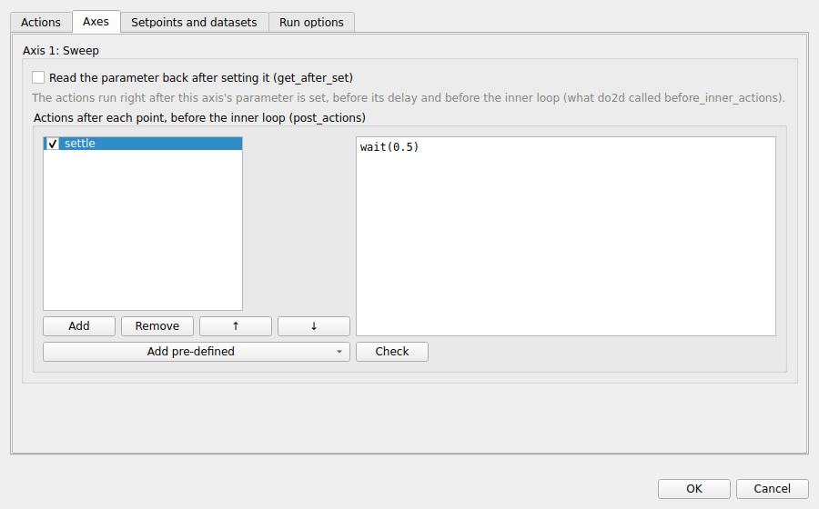
An action is Python code run as it is (there is no sandbox). It can use every experiment parameter by name (Vtop() reads it,
Vtop(0.5) sets it, with its limits and ramp rate), station, np, time, const and the waiting helpers below.
The actions of one measurement share their variables. Check compiles the selected action and shows its first error.
Waiting helpers
wait(seconds)Waits that long, like
time.sleep.wait_until(condition, timeout=None)Waits until
condition()is true, for examplewait_until(lambda: Vtop() > 0.1, timeout=600).wait_below(parameter, value, timeout=None),wait_above(parameter, value, timeout=None)Wait until the parameter reads below (above) the value.
wait_stable(parameter, tol, dwell, target=None, timeout=None)Waits until the parameter stays within
tolfordwellseconds: all the readings within ±toloftargetif one is given, otherwise spread over no more than2 × tol(a drift or a ripple that small).
Unlike time.sleep and a loop of your own, the helpers end at once when you press Stop, give up after timeout seconds
(the measurement then fails, which is better than waiting for ever), show in the status bar what they wait for and the current
value, and leave the clocks of the run standing still while they wait.
Pre-defined actions
Add pre-defined under each list adds a one-line action from a menu: a fixed wait, wait until a parameter is below, above or stable, wait until it has reached a value and is stable, or set a parameter to a value. For those that need a parameter, a drop-down lists the parameters it can use. The line can be edited afterwards and combined with code of your own.

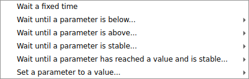

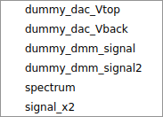
Setpoints and datasets
- Additional setpoints
Experiment parameters that are read once before the sweep and stored with every point as extra coordinates of the dataset (a temperature, a field …). They are not swept.
- Write several datasets
Each dataset is a run of its own, with the measured parameters you tick and the setpoints they depend on. Use it to separate, for example, the DC and the AC measurements of the same sweep. Each dataset must depend on at least one parameter of every axis and on every additional setpoint.

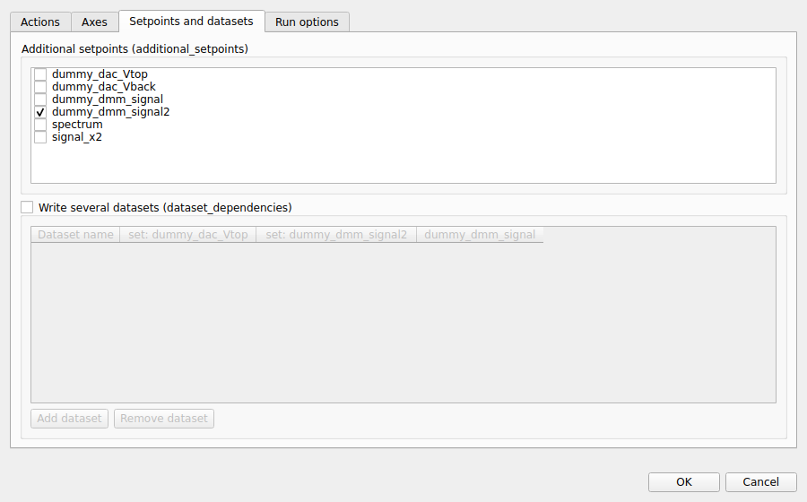
Run options
- Write period (s)
Seconds between two writes of the data to the database (0.5 by default). A shorter period means the live plot sees the data sooner and a crash loses less; a longer one writes less often.
- Use threads
Reads the measured parameters of different instruments at the same time. The parameters of one instrument are still read one after the other.
- In-memory cache
Keeps the data in memory too (faster plotting, more memory). Switch it off for very large traces.
- Log message
A message written to the QCoDeS log when the measurement starts.
- Export the data after each run, Export format, Export folder
Uses QCoDeS’ automatic export (
dataset.export_automatic) for this measurement only: Default follows the QCoDeS configuration (Settings, QCoDeS), Yes and No override it. The formats are CSV and NetCDF; by default the files go to a folder named after the database, next to it.- Save the plots after each run
Plots each dataset with
qcodes.dataset.plot_datasetand savesplot_<run>_<name>.png(or.pdf,.svg) in the export folder, also when the run was stopped, if it wrote data.

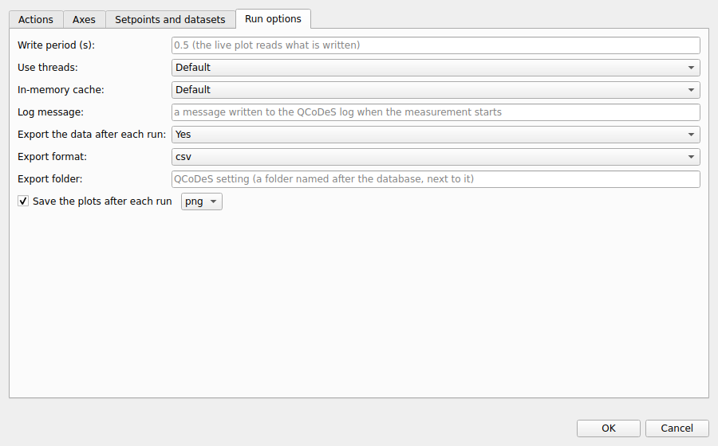
What is written
Every run is a QCoDeS dataset in the database of the Data tab, with the setpoints (the swept parameters) and the measured parameters, under the names you gave them. Its snapshot holds the state of all the instruments, the definitions of the experiment parameters and the setup of this tab at the moment the run started, so that a run can always be understood and repeated later (see the Data tab).